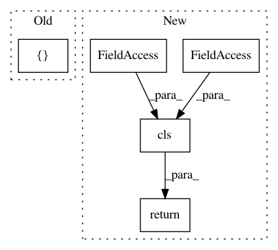

13fc68c1fbc73ba9791863d5976e529133a7786e,src/sagemaker/processing.py,ProcessingJob,from_processing_name,#Any#Any#Any#,635
Before Change
)
for processing_input in job_desc["ProcessingInputs"]
],
outputs=[
ProcessingOutput(
source=job_desc["ProcessingOutputConfig"]["Outputs"][0]["S3Output"][
"LocalPath"
],
destination=job_desc["ProcessingOutputConfig"]["Outputs"][0]["S3Output"][
"S3Uri"
],
output_name=job_desc["ProcessingOutputConfig"]["Outputs"][0]["OutputName"],
)
],
output_kms_key=job_desc["ProcessingOutputConfig"].get("KmsKeyId"),
)
After Change
if job_desc.get("ProcessingOutputConfig"):
output_kms_key = job_desc["ProcessingOutputConfig"].get("KmsKeyId")
return cls(
sagemaker_session=sagemaker_session,
job_name=processing_job_name,
inputs=inputs,
outputs=outputs,
output_kms_key=output_kms_key,
)
@classmethod
def from_processing_arn(cls, sagemaker_session, processing_job_arn):
Initializes a ``ProcessingJob`` from a Processing ARN.
In pattern: SUPERPATTERN
Frequency: 3
Non-data size: 5
Instances
Project Name: aws/sagemaker-python-sdk
Commit Name: 13fc68c1fbc73ba9791863d5976e529133a7786e
Time: 2020-03-10
Author: knakad@amazon.com
File Name: src/sagemaker/processing.py
Class Name: ProcessingJob
Method Name: from_processing_name
Project Name: facebookresearch/pytext
Commit Name: d56c31197dc9a705b7a72d86114d8d5115463349
Time: 2019-06-14
Author: egaudet@fb.com
File Name: pytext/metric_reporters/compositional_metric_reporter.py
Class Name: CompositionalMetricReporter
Method Name: from_config
Project Name: snipsco/snips-nlu
Commit Name: cec3513a90b88e9251355de9ddf979a0576f0044
Time: 2017-04-05
Author: clement.doumouro@snips.ai
File Name: snips_nlu/nlu_engine.py
Class Name: SnipsNLUEngine
Method Name: load_from